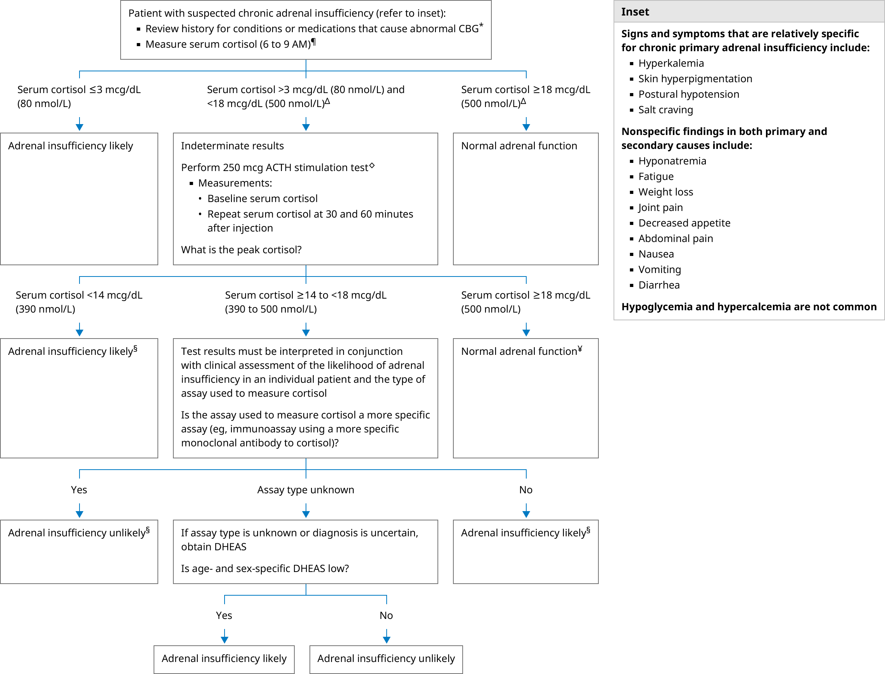

ACTH: corticotropin; CBG: corticosteroid-binding globulin; DHEAS: dehydroepiandrosterone sulfate; LC-MS/MS: liquid chromatography-tandem mass spectrometry.
* The approach described assumes no abnormalities in CBG. An incorrect diagnosis may be made if the usual cortisol thresholds are applied to patients with abnormalities in CBG, including:
Refer to UpToDate content on diagnosing adrenal insufficiency in the setting of abnormal CBG.
¶ Measure serum cortisol within 3 hours after awakening. For night shift workers, measure basal serum cortisol when the individual wakes up. If primary adrenal insufficiency is suspected (eg, orthostatic hypotension with additional signs and symptoms), measure cortisol, ACTH, renin, and aldosterone levels simultaneously to expedite the diagnosis.
Δ In the setting of chronic adrenal insufficiency, the interpretation of the morning cortisol result depends on the type of assay that is used. When using less cross-reactive cortisol assays (eg, immunoassays with more specific monoclonal cortisol antibodies, LC-MS/MS), the morning cortisol threshold to exclude adrenal insufficiency is approximately 25 to 30% lower (eg, approximately 13 to 14 mcg/dL [360 to 390 nmol/L] instead of 18 mcg/dL).
◊ The 250 mcg ACTH stimulation test may be performed any time of day. However, if baseline ACTH is being obtained with stimulation test, the test must be performed in the morning, between 6 and 9 AM.
§ If the clinical assessment is not aligned with this diagnosis, DHEAS levels can be obtained to evaluate further. Low age- and sex-specific DHEAS levels support the diagnosis of adrenal insufficiency, whereas normal or elevated levels make the diagnosis unlikely.
¥ A peak serum cortisol ≥18 mcg/dL (500 nmol/L) generally excludes adrenal insufficiency regardless of cortisol assay used to measure it.